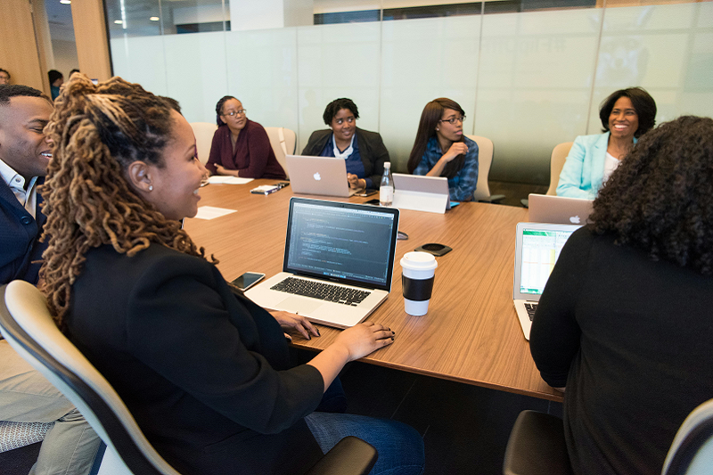

ACCUEIL
À PROPOS
ACTIVITÉS
RAPPORTS D'ACTIVITÉS
MÉDIAS
Images
Vidéos
Coupures de presse
Articles de presse
CONTACT
Bâtir une Société Civile Forte pour le Développement du Togo
Bâtir une Société Civile Forte pour le Développement du Togo

Bâtir une Société Civile Forte pour le Développement du Togo
Précédent
Suivant